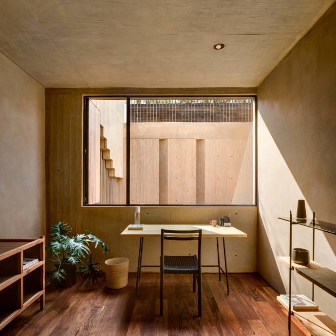

What is a website, anyway?
In response to this question, Laurel Schwust writes that a website is "a file or bundle of files living on a server somewhere." But the intention of the article is to communicate the idea that a website can, really, be anything. Both Schwulst and Zach Mandeville press the idea that the future of the web should be in the hands of the individual. I prefer Schwulst's argument, in that individuals should have personal websites to complement their other work—that websites should be living, temporal spaces—rather than Mandeville's idea to eschew the mainstream and use "personal sites in the same way they wrote zines."
Schwulst's uses metaphors effectively when arguing that websites can be anything from a room, shelf, plant, garden, or puddle. I particularly like her argument against the cloud as a metaphor in favor of a more concrete way of thinking of the web. Schwulst has an optimistic view when she speaks of the future of the web and this idea that people must "remember the responsibility we each have in building a better web" seems a bit idealistic. But she does makes a great case when she argues that individuals should carve their own space on the web, especially with her point: "a website is an individual act of collective ambition."
Website as Room

In an age of information overload,
a room is comforting because it is finite,
often with a specific intended purpose.
Zooming into this room inside this house, we see a shelf. Maybe a shelf is easier to think about than a whole room.
What does one put on a shelf? Books and objects from life? Sure, go ahead.
Thankfully there’s nothing too heavy on the shelf, or else it would break. A few small things will do, knowledge-containing or not.